松江フォーゲルパークは普通に楽しい。
2021/11/14
久しぶりにフォーゲルパークに行きました。
鳥自体はそんなに興味ないんですが、近くで動いているのを見るのは楽しいです。
写真を撮るのも楽しかったので、ここに沢山画像を載せました。
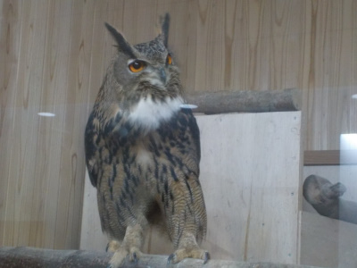
フクロウはなんかカッコいいです。見てて楽しいです。
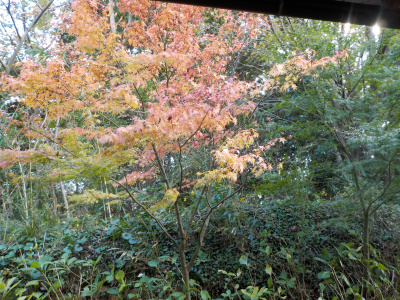
モミジが多く植えてあり、所々紅葉していました。
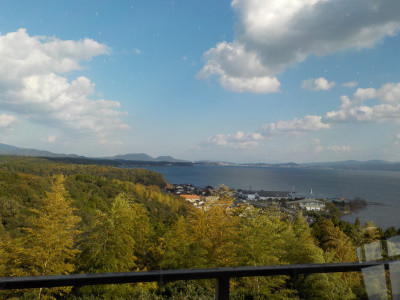
展望台からの景色です。屋内なので写真を撮るのが難しかったです。
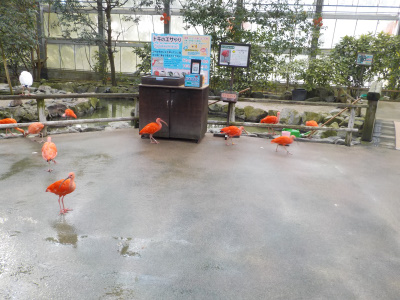
エサをもらうために、鳥がうろちょろしています。
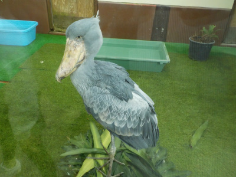
じっとしているハシビロコウ。でもそんなにじっとはしていなかったです。
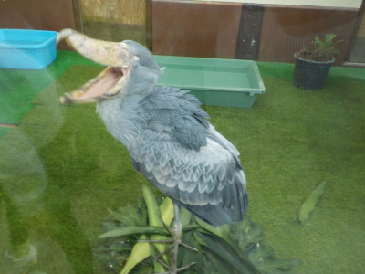
口を開けるハシビロコウ。
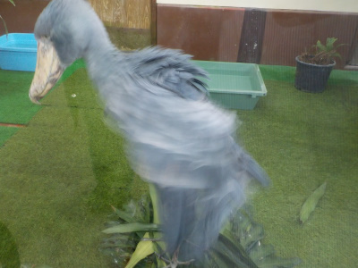
翼を動かすハシビロコウ。すぐそばで大きな鳥が動いているので迫力がありました。
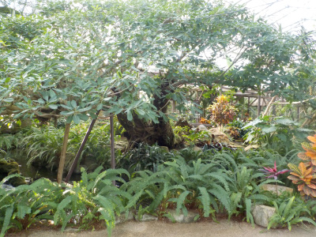
ジャングルっぽいです。
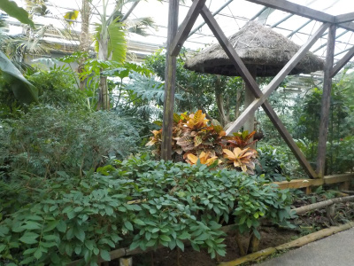
植物も色々植わってます。
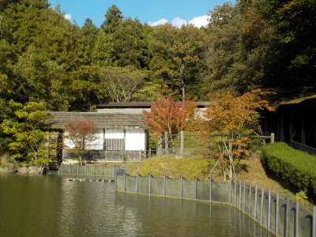
のどかな感じの場所もありました。
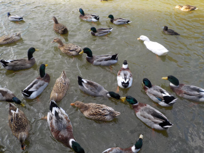
水鳥がエサをもらいに集まっています。
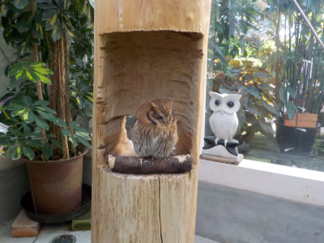
ガラスなしで、間近でフクロウが見れます。
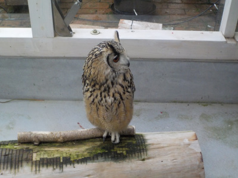
モフモフで可愛いですね。
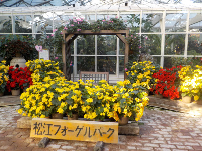
記念写真をどうぞ。
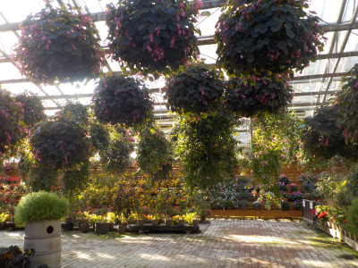
たまたま人がいなかったので写真を撮りました。脚光ですね。
実物は明るくてもっとキレイです。
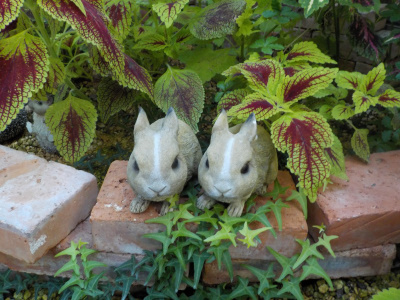
ウサギを探そうって看板があったので探しました。
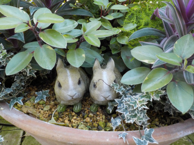
ウサギは1対だと想ったら他にもいました。こっちは偽物？
色々あってレジャーにいい場所ですね。